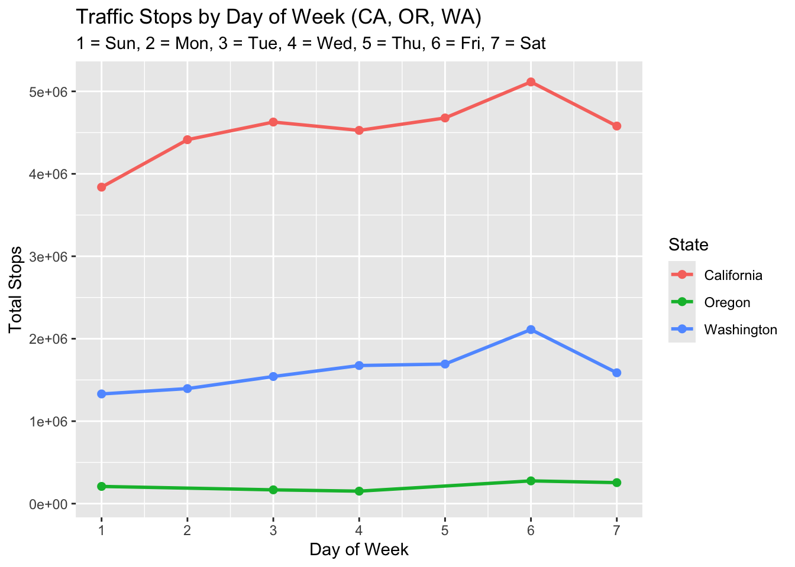
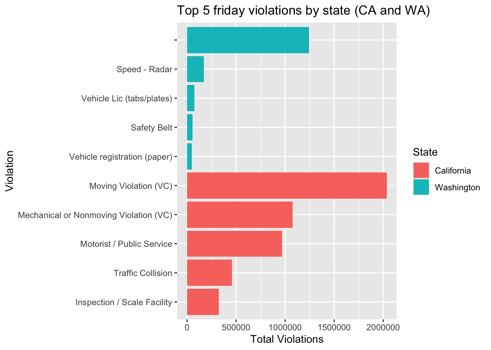

library(RMariaDB)
library(tidyverse)Traffic stops
For this project we will be working with data from the The Stanford Open Policing Project. The rich data collected by their team contains millions of traffic stops by law enforcement agencies across the United States. From this data set, I want to see if there are patterns for what days of the week tend to have more vehicle traffic stops by law enforcement agents in the states of California, Oregon and Washington (west coast!),
First, we need to bring the data through SQL. This is important as this data set is so rich that importing it fully could crash our computers!
con_traffic <- DBI::dbConnect(
RMariaDB::MariaDB(),
dbname = "traffic",
host = Sys.getenv("TRAFFIC_HOST"),
user = Sys.getenv("TRAFFIC_USER"),
password = Sys.getenv("TRAFFIC_PWD")
)DBI::dbListTables(con_traffic) [1] "ar_little_rock_2020_04_01" "az_gilbert_2020_04_01"
[3] "az_mesa_2023_01_26" "az_statewide_2020_04_01"
[5] "ca_anaheim_2020_04_01" "ca_bakersfield_2020_04_01"
[7] "ca_long_beach_2020_04_01" "ca_los_angeles_2020_04_01"
[9] "ca_oakland_2020_04_01" "ca_san_bernardino_2020_04_01"
[11] "ca_san_diego_2020_04_01" "ca_san_francisco_2020_04_01"
[13] "ca_san_jose_2020_04_01" "ca_santa_ana_2020_04_01"
[15] "ca_statewide_2023_01_26" "ca_stockton_2020_04_01"
[17] "co_aurora_2023_01_26" "co_denver_2020_04_01"
[19] "co_statewide_2020_04_01" "ct_hartford_2020_04_01"
[21] "ct_statewide_2020_04_01" "fl_saint_petersburg_2020_04_01"
[23] "fl_statewide_2020_04_01" "fl_tampa_2020_04_01"
[25] "ga_statewide_2020_04_01" "ia_statewide_2020_04_01"
[27] "id_idaho_falls_2020_04_01" "il_chicago_2023_01_26"
[29] "il_statewide_2020_04_01" "in_fort_wayne_2020_04_01"
[31] "ks_wichita_2023_01_26" "ky_louisville_2023_01_26"
[33] "ky_owensboro_2020_04_01" "la_new_orleans_2020_04_01"
[35] "ma_statewide_2020_04_01" "md_baltimore_2020_04_01"
[37] "md_statewide_2020_04_01" "mi_statewide_2020_04_01"
[39] "mn_saint_paul_2020_04_01" "mo_statewide_2020_04_01"
[41] "ms_statewide_2020_04_01" "mt_statewide_2023_01_26"
[43] "nc_charlotte_2020_04_01" "nc_durham_2020_04_01"
[45] "nc_fayetteville_2020_04_01" "nc_greensboro_2020_04_01"
[47] "nc_raleigh_2020_04_01" "nc_statewide_2020_04_01"
[49] "nc_winston_salem_2020_04_01" "nd_grand_forks_2020_04_01"
[51] "nd_statewide_2020_04_01" "ne_statewide_2020_04_01"
[53] "nh_statewide_2020_04_01" "nj_camden_2020_04_01"
[55] "nj_statewide_2020_04_01" "nv_henderson_2020_04_01"
[57] "nv_statewide_2020_04_01" "ny_albany_2020_04_01"
[59] "ny_statewide_2020_04_01" "oh_cincinnati_2020_04_01"
[61] "oh_columbus_2020_04_01" "oh_statewide_2020_04_01"
[63] "ok_oklahoma_city_2023_01_26" "ok_tulsa_2020_04_01"
[65] "or_statewide_2020_04_01" "pa_philadelphia_2020_04_01"
[67] "ri_statewide_2020_04_01" "sc_statewide_2020_04_01"
[69] "sd_statewide_2020_04_01" "tn_nashville_2020_04_01"
[71] "tn_statewide_2020_04_01" "tx_arlington_2020_04_01"
[73] "tx_austin_2020_04_01" "tx_garland_2020_04_01"
[75] "tx_houston_2023_01_26" "tx_lubbock_2020_04_01"
[77] "tx_plano_2020_04_01" "tx_san_antonio_2023_01_26"
[79] "tx_statewide_2020_04_01" "va_statewide_2020_04_01"
[81] "vt_burlington_2023_01_26" "vt_statewide_2020_04_01"
[83] "wa_seattle_2020_04_01" "wa_statewide_2020_04_01"
[85] "wa_tacoma_2020_04_01" "wi_madison_2023_01_26"
[87] "wi_statewide_2020_04_01" "wy_statewide_2020_04_01" Now, let’s explore the variables within the tables.
SELECT * FROM ca_statewide_2023_01_26 LIMIT 5;| raw_row_number | date | county_name | district | subject_race | subject_sex | department_name | type | violation | arrest_made | citation_issued | warning_issued | outcome | contraband_found | frisk_performed | search_conducted | search_person | search_basis | reason_for_stop | raw_race | raw_search_basis | raw_location_code |
|---|---|---|---|---|---|---|---|---|---|---|---|---|---|---|---|---|---|---|---|---|---|
| 1 | 2009-07-01 | Stanislaus | Modesto | other | male | California Highway Patrol | vehicular | Motorist / Public Service | NA | NA | NA | NA | NA | NA | 0 | 0 | NA | Motorist / Public Service | Other | Vehicle Inventory | 465 |
| 2 | 2009-07-01 | Stanislaus | Modesto | hispanic | female | California Highway Patrol | vehicular | Moving Violation (VC) | 0 | 0 | 0 | summons | NA | NA | 0 | 0 | NA | Moving Violation (VC) | Hispanic | Probable Cause (positive) | 465 |
| 3 | 2009-07-01 | Stanislaus | Modesto | hispanic | female | California Highway Patrol | vehicular | Moving Violation (VC) | 0 | 0 | 0 | summons | NA | NA | 1 | NA | other | Moving Violation (VC) | Hispanic | Probable Cause (positive) | 465 |
| 4 | 2009-07-01 | Stanislaus | Modesto | white | female | California Highway Patrol | vehicular | Moving Violation (VC) | 0 | 0 | 0 | summons | NA | NA | 0 | 0 | NA | Moving Violation (VC) | White | Probable Cause (positive) | 465 |
| 5 | 2009-07-01 | Stanislaus | Modesto | hispanic | male | California Highway Patrol | vehicular | Moving Violation (VC) | 0 | 0 | 0 | summons | NA | NA | 1 | NA | other | Moving Violation (VC) | Hispanic | Probable Cause (positive) | 465 |
SELECT * FROM or_statewide_2020_04_01 LIMIT 5;| raw_row_number | date | subject_race | type | raw_Race |
|---|---|---|---|---|
| 1 | 2010-01-01 | white | vehicular | White |
| 2 | 2010-01-01 | white | vehicular | White |
| 3 | 2010-01-01 | white | vehicular | White |
| 4 | 2010-01-01 | white | vehicular | White |
| 5 | 2010-01-01 | hispanic | vehicular | Hispanic |
SELECT * FROM wa_statewide_2020_04_01 LIMIT 5;| raw_row_number | date | time | location | lat | lng | county_name | subject_age | subject_race | subject_sex | officer_race | officer_sex | department_name | type | violation | arrest_made | citation_issued | warning_issued | outcome | contraband_found | frisk_performed | search_conducted | search_basis | raw_officer_race | raw_officer_gender | raw_contact_type | raw_driver_race | raw_driver_gender | raw_search_type | raw_enforcements |
|---|---|---|---|---|---|---|---|---|---|---|---|---|---|---|---|---|---|---|---|---|---|---|---|---|---|---|---|---|---|
| 1 | 2009-10-27 | 11:00:00 | S-012-344 | 46.11422 | -118.2245 | Walla Walla County | 30 | white | male | white | male | Washington State Patrol | vehicular | Vehicle Lic (tabs/plates)|Vehicle registration (paper) | NA | 1 | 1 | citation | NA | 0 | 0 | NA | WHITE | - | – | White | M | N | -|-|- |
| 2 | 2009-10-04 | 21:00:00 | I-090-10 | 47.58052 | -122.1703 | King County | 29 | black | male | white | male | Washington State Patrol | vehicular | NA | 1 | 1 | citation | NA | 0 | 0 | NA | WHITE | - | – | African American | M | N | -|- | |
| 3 | 2009-10-04 | 03:00:00 | I-090-72 | 47.25000 | -121.1899 | Kittitas County | 25 | white | male | white | male | Washington State Patrol | vehicular | 0 | 0 | 0 | NA | NA | 0 | 0 | NA | WHITE | - | – | White | M | N | ||
| 4 | 2009-10-04 | 13:00:00 | S-014-3 | 45.61534 | -122.6129 | Clark County | 19 | white | female | white | male | Washington State Patrol | vehicular | Safety Belt|Safety Belt|Vehicle Lic (tabs/plates)|Vehicle registration (paper) | NA | 1 | 1 | citation | NA | 0 | 0 | NA | WHITE | - | – | White | F | N | -|-|-|-|-|- |
| 5 | 2009-10-11 | 08:00:00 | S-003-40 | 47.59028 | -122.6987 | Kitsap County | 25 | white | male | white | male | Washington State Patrol | vehicular | 0 | 0 | 1 | warning | NA | 0 | 0 | NA | WHITE | - | – | White | M | N | -|- |
We should also take a look into the kinds of variables we are working on for each state.
DESCRIBE ca_statewide_2023_01_26;| Field | Type | Null | Key | Default | Extra |
|---|---|---|---|---|---|
| raw_row_number | text | YES | NA | ||
| date | date | YES | NA | ||
| county_name | text | YES | NA | ||
| district | text | YES | NA | ||
| subject_race | text | YES | NA | ||
| subject_sex | text | YES | NA | ||
| department_name | text | YES | NA | ||
| type | text | YES | NA | ||
| violation | text | YES | NA | ||
| arrest_made | double | YES | NA |
DESCRIBE or_statewide_2020_04_01| Field | Type | Null | Key | Default | Extra |
|---|---|---|---|---|---|
| raw_row_number | text | YES | NA | ||
| date | text | YES | NA | ||
| subject_race | text | YES | NA | ||
| type | text | YES | NA | ||
| raw_Race | text | YES | NA |
DESCRIBE wa_statewide_2020_04_01| Field | Type | Null | Key | Default | Extra |
|---|---|---|---|---|---|
| raw_row_number | text | YES | NA | ||
| date | date | YES | NA | ||
| time | time | YES | NA | ||
| location | text | YES | NA | ||
| lat | double | YES | NA | ||
| lng | double | YES | NA | ||
| county_name | text | YES | NA | ||
| subject_age | bigint(20) | YES | NA | ||
| subject_race | text | YES | NA | ||
| subject_sex | text | YES | NA |
With all of this information, we now need to join these 3 tables so we can do our west coast analysis.
SELECT
'California' AS state,
DAYOFWEEK(date) AS weekday,
COUNT(*) AS total_stops
FROM ca_statewide_2023_01_26
WHERE type = 'vehicular'
GROUP BY state, DAYOFWEEK(date)
UNION ALL
SELECT
'Oregon' AS state,
DAYOFWEEK(date) AS weekday,
COUNT(*) AS total_stops
FROM or_statewide_2020_04_01
WHERE type = 'vehicular'
GROUP BY state, DAYOFWEEK(date)
UNION ALL
SELECT
'Washington' AS state,
DAYOFWEEK(date) AS weekday,
COUNT(*) AS total_stops
FROM wa_statewide_2020_04_01
WHERE type = 'vehicular'
GROUP BY state, DAYOFWEEK(date)
ORDER BY weekday, state;Now, we can plot this information!
library(ggplot2)
ggplot(
ca_or_wa_weekday,
aes(x = weekday, y = total_stops, color = state, group = state)
) +
geom_line(linewidth = 1) +
geom_point(size = 2) +
scale_x_continuous(breaks = 1:7)+
labs(
title = "Traffic Stops by Day of Week (CA, OR, WA)",
subtitle = "1 = Sun, 2 = Mon, 3 = Tue, 4 = Wed, 5 = Thu, 6 = Fri, 7 = Sat",
x = "Day of Week",
y = "Total Stops",
color = "State"
)
As expected (and this is true for all states considered), out of all weekdays, Friday has the highest traffic stops by enforcement agents. This might be because people drive more on Fridays since not only do they go to work, but also go home and then go to other places for leisure. It is hard to say that there is a similar trend going on the other way that is true for all states though (meaning, the day of the week with the lowest traffic stops by enforcement agents!) as there is more variability in this scenario.
Now that we have information on the days of the week, let’s be even more precise: what are the most common violations that happen during fridays across these states? Unfortunately, the variable “violations” is only present in the tables for Washignton and California, so we can’t use Oregon here.
First, we need to once more join the tables.
SELECT
state,
violation,
COUNT(*) AS total_violations
FROM (
SELECT
'California' AS state,
violation,
date
FROM ca_statewide_2023_01_26
WHERE violation IS NOT NULL
UNION ALL
SELECT
'Washington' AS state,
violation,
date
FROM wa_statewide_2020_04_01
WHERE violation IS NOT NULL
) AS combined
WHERE DAYOFWEEK(date) = 6
GROUP BY state, violation
ORDER BY state, total_violations DESC;Creating the top 5 violations:
top5_friday_violations <- friday_violations |>
group_by(state) |>
arrange(desc(total_violations)) |>
slice_head(n = 5)Now plotting!
library(dplyr)
library(ggplot2)
ordered_df <- top5_friday_violations |>
mutate(
state = factor(state, levels = c("California", "Washington")),
violation = reorder(violation, total_violations)
)
ggplot(
ordered_df,
aes(
x = total_violations,
y = violation,
fill = state
)
) +
geom_col(position = "dodge") +
labs(
title = "Top 5 friday violations by state (CA and WA)",
x = "Total Violations",
y = "Violation",
fill = "State"
) 
In both states, speed-related violations seem to be the most common, although California dominates it by far (possibly and substantially because of its much greater population). I would suppose part of the reason why however, in both states, speed-related violations are most common are in part because of people going to party at night and other forms of leisure. These factors can lead to more aggressive driving, higher average speeds, and therefore a greater frequency of speed-related stops. Another thing that was interesting to me is the difference in the types of violations between both states: California’s traffic violations seem to be of a more severe/of safety concern reason, whilst for Washington it has to do more with procedural violations (like not having your seatbelt on or your vehicle license!)
To wrap up this project, let’s summarize what I did. I used SQL to query traffic data in all west coast states (not if you consider Alaska to be one though!). After doing this I summarized vehicular stops by traffic agents by the day of the week across all three states, and found that across them Fridays are the days with the highest vehicular stops by traffic aggents. Then, given the lack of data for Oregon, I focused on the most common violations that occurred in Fridays in both California and Washington, and noticed that the violations in California seem to be of a more safety-concern cause than in Washington, where a lot of violations were associated with procedural violations.
dbDisconnect(con_traffic)References
Pierson, Emma, Camelia Simoiu, Jan Overgoor, Sam Corbett-Davies, Daniel Jenson, Amy Shoemaker, Vignesh Ramachandran, et al. 2020. “A Large-Scale Analysis of Racial Disparities in Police Stops Across the United States.” Nature Human Behaviour, 1–10.
Stanford Open Policing Project. (n.d.). OpenPolicing database. Retrieved November 25, 2025, from https://openpolicing.stanford.edu/